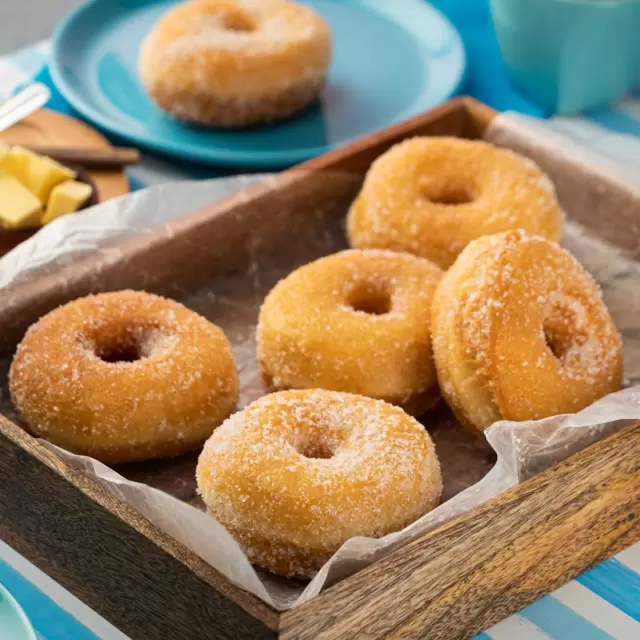

Receta de Donas

Ingredientes:
- 2 tazas de harina de trigo
- 1/2 taza de azúcar
- 2 cucharaditas de levadura en polvo
- 1/2 cucharadita de sal
- 1 huevo grande
- 1/2 taza de leche
- 2 cucharadas de mantequilla derretida
- 1 cucharadita de extracto de vainilla
Pasos a seguir:
- En un bol grande, mezcla la harina, el azúcar, la levadura en polvo y la sal.
- En otro bol, bate el huevo y luego añade la leche, la mantequilla derretida y el extracto de vainilla. Mezcla bien.
- Agrega la mezcla líquida a los ingredientes secos y mezcla hasta obtener una masa homogénea.
- Amasa la masa sobre una superficie enharinada durante unos minutos hasta que esté suave y elástica.
- Extiende la masa con un rodillo hasta que tenga un grosor de aproximadamente 1 cm. Usa un cortador de donas para cortar las formas.
- Calienta aceite en una sartén a fuego medio-alto. Fríe las donas durante 2-3 minutos por cada lado o hasta que estén doradas y cocidas por dentro.
- Escurre las donas en papel absorbente y luego pásalas por azúcar o glaseado si lo deseas.
- Sirve y disfruta tus donas caseras.